Costa Blanca · Rojales
Inmuebles en venta en Ciudad Quesada
Villas con piscina privada cerca de La Marquesa Golf, pisos nuevos y bungalows, y viviendas en La Finca Golf, en la cercana Algorfa. Estos son los inmuebles que vendemos hoy en Ciudad Quesada y alrededores, con una breve guía de las zonas y lo que cuesta de verdad comprar.
- 20inmuebles en venta en Ciudad Quesada
- desde 260.900 €un bungalow
- unos 35 minal aeropuerto de Alicante-Elche
- unos 15 mina las playas de Guardamar
En venta ahora
Inmuebles en venta en Ciudad Quesada
Sobre todo villas de 3 o 4 dormitorios con piscina privada, además de pisos nuevos y bungalows, muchos cerca de La Marquesa Golf. Los precios son los de hoy; pregúntenos por la disponibilidad actual.
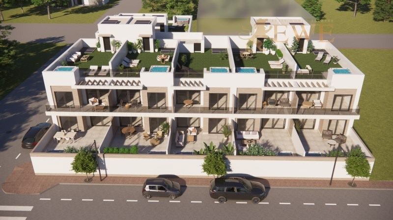
Entrega ene 2027Ciudad Quesada
Spacious bungalow with jacuzzi in Rojales
260.900 €
2 dormitorios · 2 baños · 76 m²Ref. EWE3654
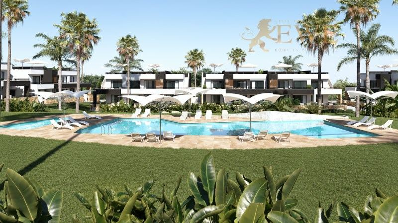
Ciudad Quesada
New and fully equipped apartment in Ciudad Quesada
300.000 €
2 dormitorios · 2 baños · 78.87 m²Ref. EWE3387
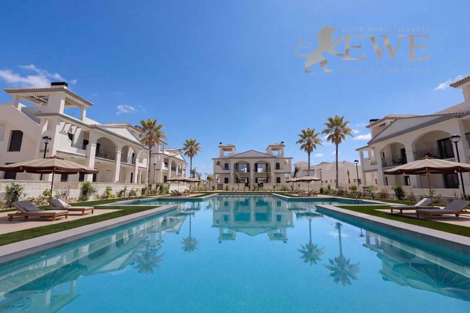
Ciudad Quesada
New flat with large terrace in Ciudad Quesad
328.700 €
2 dormitorios · 2 baños · 81 m²Ref. EWE1874
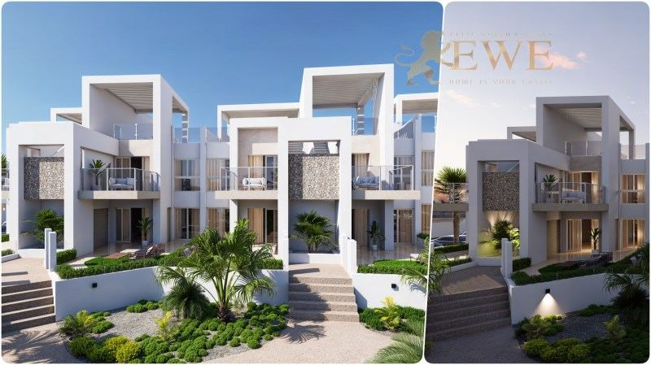
Ciudad Quesada
Wonderful bungalow with a large terrace in Rojales
358.000 €
2 dormitorios · 2 baños · 73 m²Ref. EWE3470
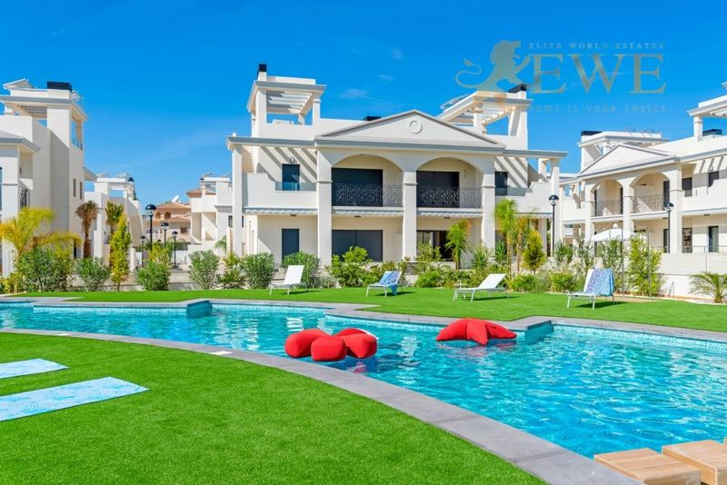
Ciudad Quesada
Ready, new appartments in Ciudad Quesada
380.000 €
2 dormitorios · 2 baños · 85 m²Ref. EWE2177
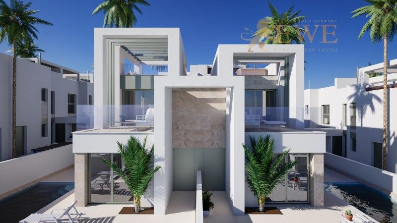
Ciudad Quesada
Modern villa with pool in Rojales
394.000 €
3 dormitorios · 3 baños · 93 m²Ref. EWE3469
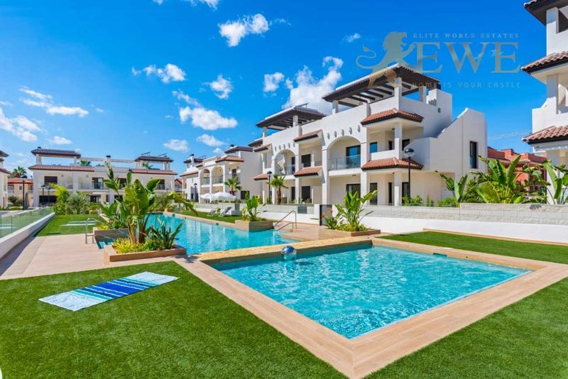
Ciudad Quesada
Modern Apartments for Sale in Ciudad Quesada
415.000 €
3 dormitorios · 2 baños · 80 m²Ref. EWE3732
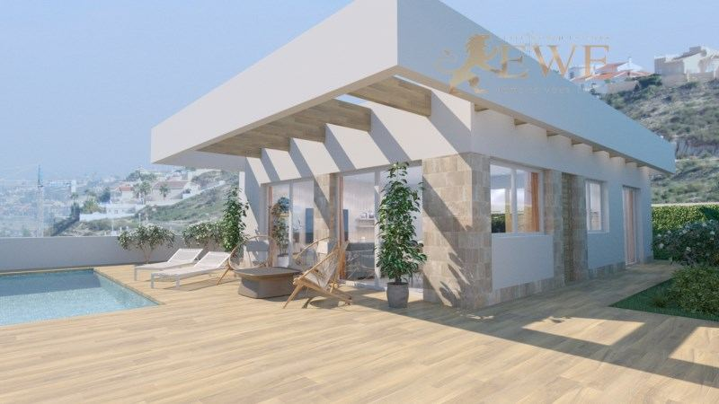
Llave en manoCiudad Quesada
Modern villas near golf course in Ciudad Quesada
449.500 €
3 dormitorios · 2 baños · 189 m²Ref. EWE1803
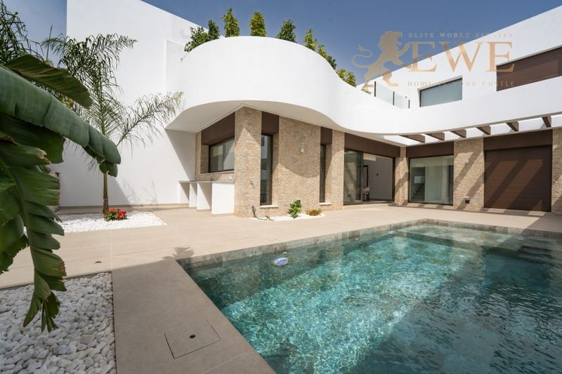
Ciudad Quesada
Elegant villa in Rojales
465.000 €
3 dormitorios · 3 baños · 140 m²Ref. EWE3454
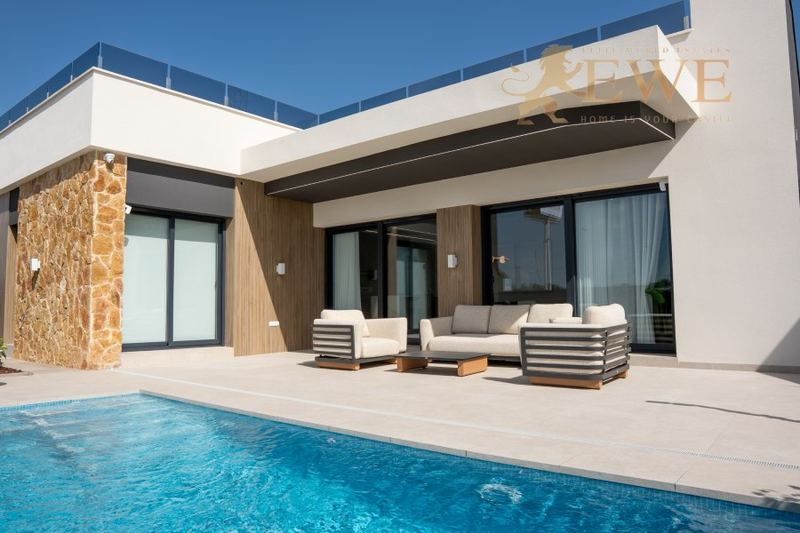
Ciudad Quesada
New villa project with pool in Ciudad Quesada
549.000 €
3 dormitorios · 2 baños · 167 m²Ref. EWE3388
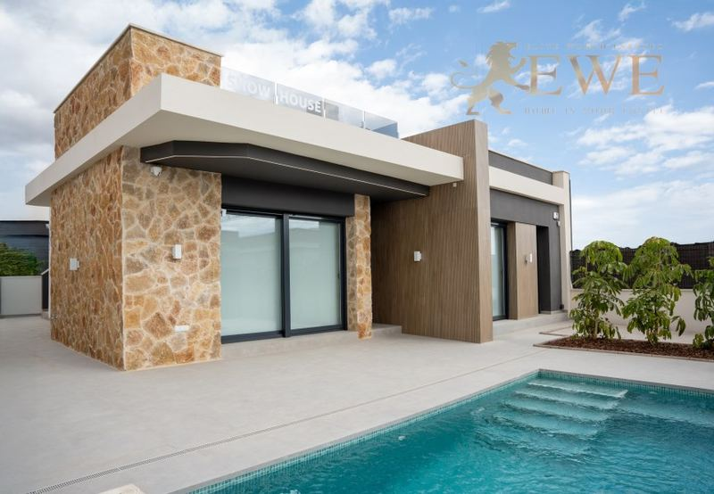
Ciudad Quesada
New villa project with pool in Ciudad Quesada
549.000 €
3 dormitorios · 2 baños · 167 m²Ref. EWE3731
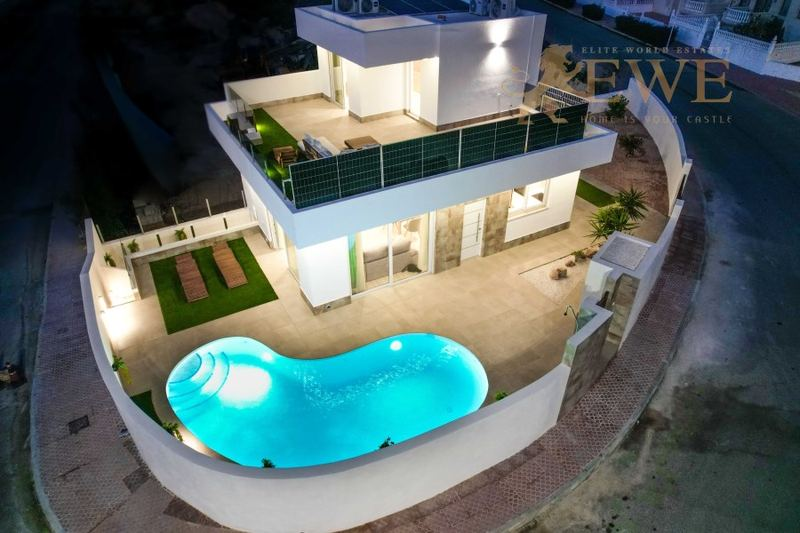
Ciudad Quesada
Ready, fully furnished villa with a private pool in Ciudad Quesada
587.000 €
3 dormitorios · 3 baños · 230 m²Ref. EWE3879
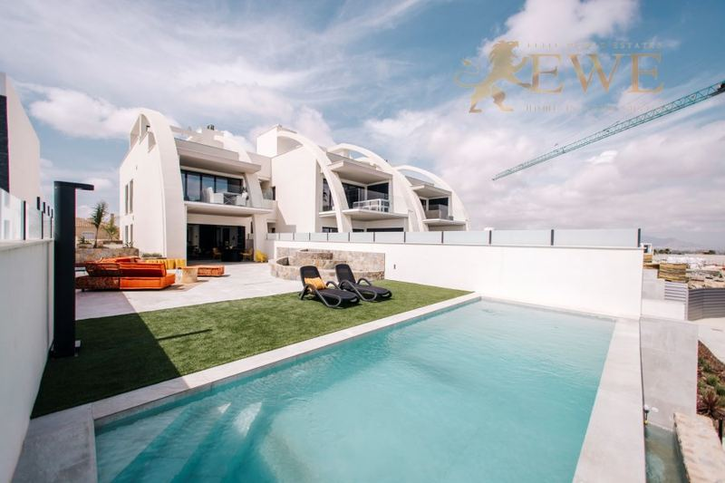
Ciudad Quesada
Luxury apartment located in Ciudad Quesada, Rojales
599.000 €
3 dormitorios · 2 baños · 84 m²Ref. EWE2035
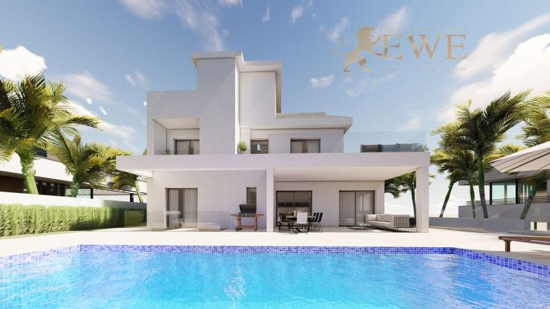
Ciudad Quesada
Stunning villa with swimming pool in Ciudad Quesada
599.000 €
4 dormitorios · 5 baños · 286.81 m²Ref. EWE3187
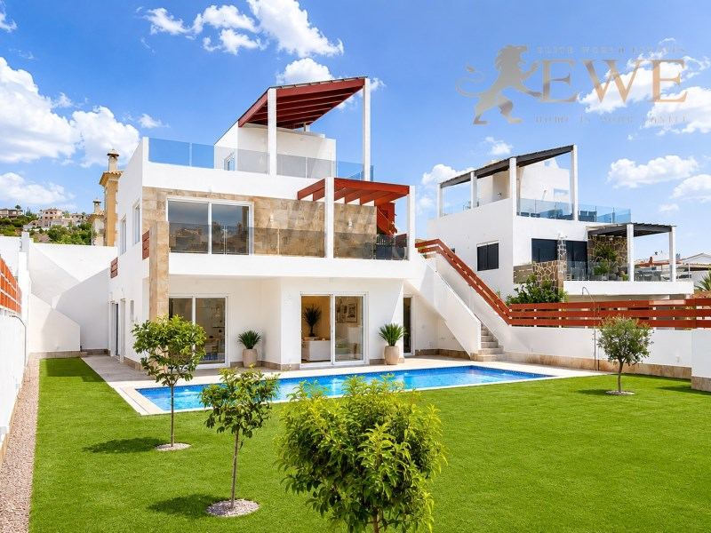
Ciudad Quesada
Ready-to-Move-In Golf Villa in Ciudad Quesada
834.000 €
4 dormitorios · 4 baños · 260 m²Ref. EWE1832
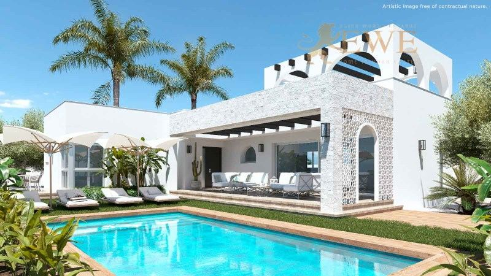
Ciudad Quesada
Exquisite Villa in Ciudad Quesada
852.460 €
3 dormitorios · 2 baños · 129 m²Ref. EWE1878
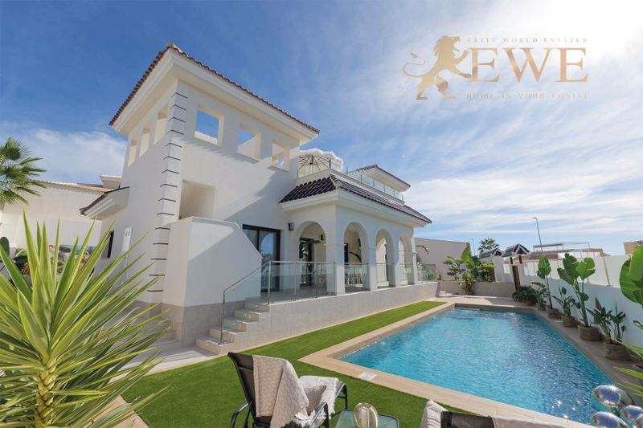
Ciudad Quesada
Mediterranean villa with pool in Doña Pepa, Ciudad Quesada
871.162 €
3 dormitorios · 2 baños · 112 m²Ref. EWE3423
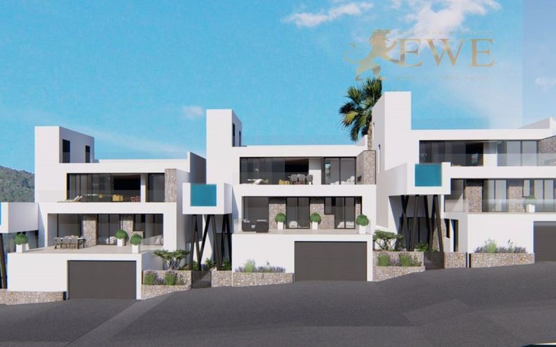
Ciudad Quesada
Luxury villa in Ciudad Quesada
995.000 €
3 dormitorios · 4 baños · 200 m²Ref. EWE1455
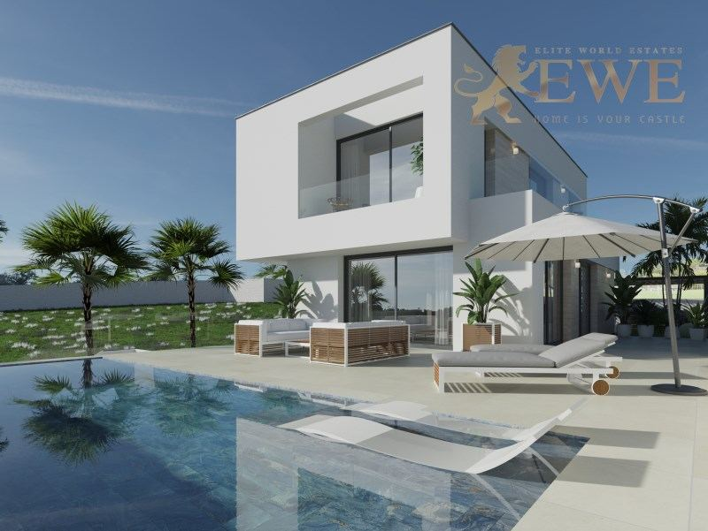
Ciudad Quesada
Excellent villa with pool in Ciudad Quesada
1.050.000 €
3 dormitorios · 3 baños · 190 m²Ref. EWE3673
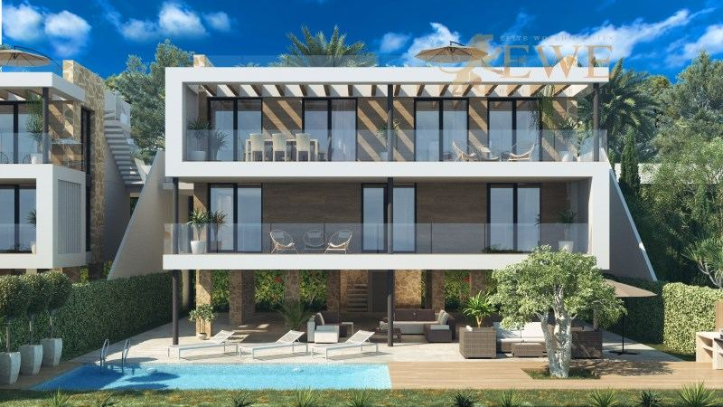
Ciudad Quesada
Exclusive villa by the golf course in Ciudad Quesada
1.200.000 €
4 dormitorios · 4 baños · 700 m²Ref. EWE1977
Muy cerca
Cerca de Ciudad Quesada: Algorfa
Algorfa está a unos 10 minutos de Ciudad Quesada. La mayoría de nuestras viviendas allí están en La Finca Golf Resort: villas, pareados y bungalows, muchos con piscina privada y vistas al golf.
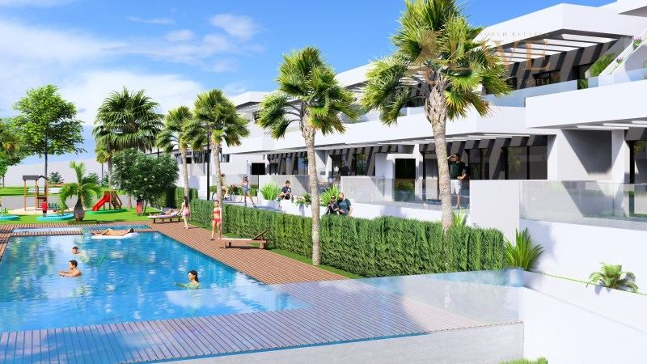
Algorfa
Fully equipped flat next to the golf course in Algorfa
285.000 €
2 dormitorios · 2 baños · 67.25 m²Ref. EWE3368
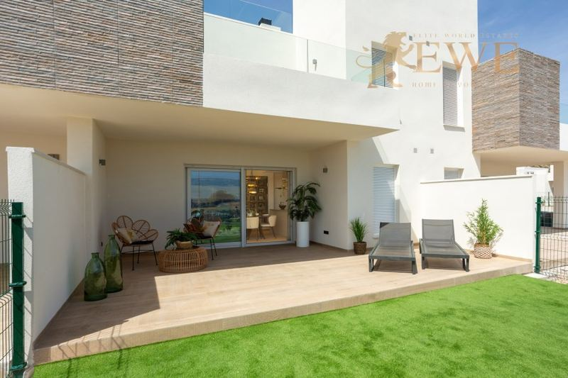
Algorfa
Modern bungalows in La Finca Golf Algorfa
318.000 €
2 dormitorios · 2 baños · 70 m²Ref. EWE2113
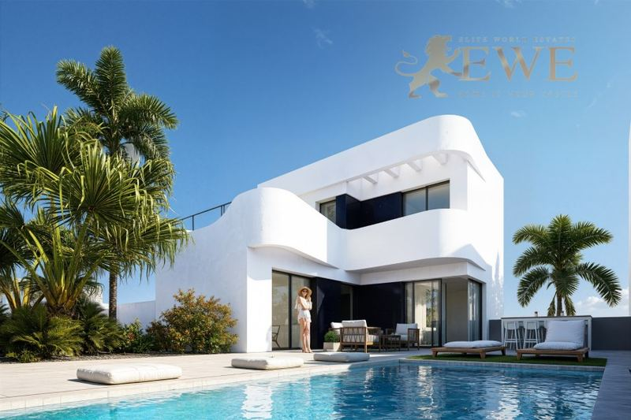
Algorfa
Elegant New-Build Villas with Private Pool on Costa Blanca
450.000 €
3 dormitorios · 2 baños · 100 m²Ref. EWE3752
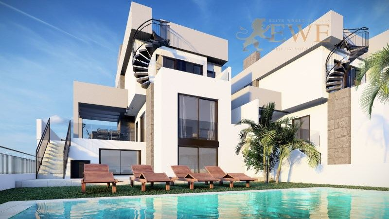
Algorfa
Modern semi-detached house with Jacuzzi in La Finca Golf Resort in Algorfa
465.000 €
2 dormitorios · 2 baños · 199 m²Ref. EWE2247
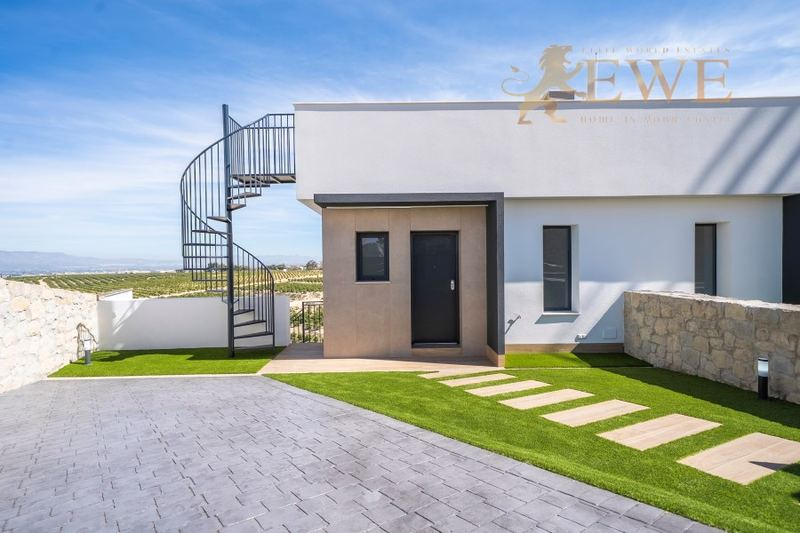
Algorfa
Fully Furnished Semi-Detached Villa at La Finca Golf Resort
473.000 €
3 dormitorios · 3 baños · 199 m²Ref. EWE3757
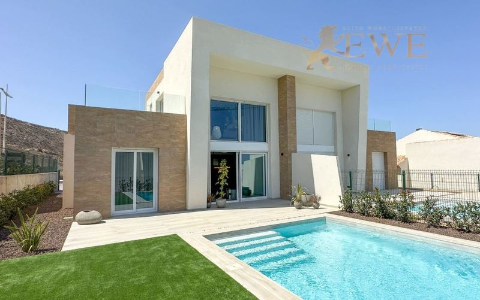
Algorfa
Luxury semi-detached houses in La Finca, Algorfa
475.000 €
3 dormitorios · 2 baños · 108 m²Ref. EWE2033
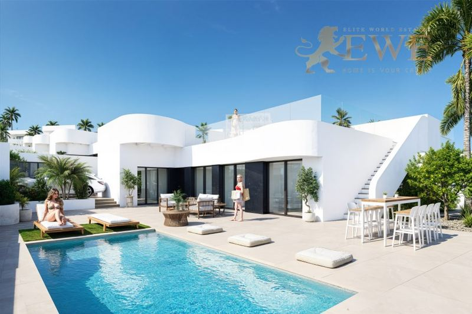
Algorfa
Designer Villa with Private Pool at La Finca Golf
475.000 €
3 dormitorios · 2 baños · 112 m²Ref. EWE3753
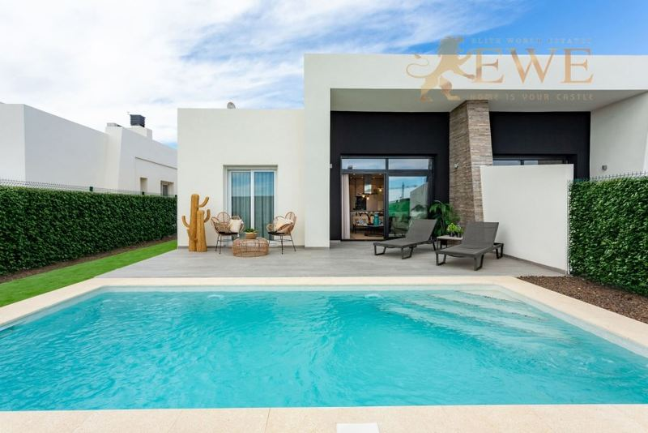
Algorfa
Modern semi-detached villas in La Finca, Algorfa
519.000 €
3 dormitorios · 2 baños · 106 m²Ref. EWE1683
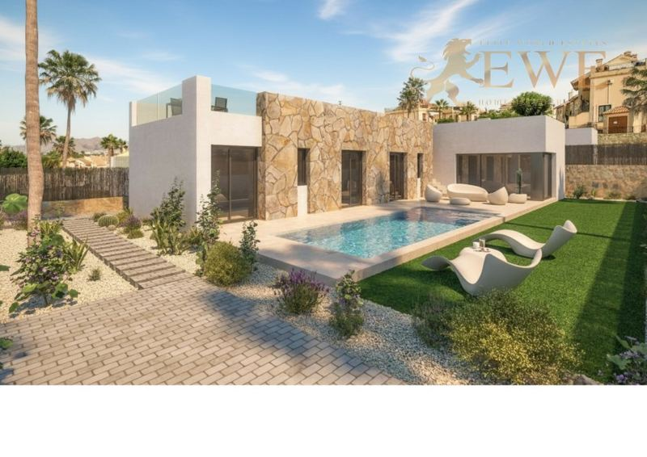
Entrega dic 2026Algorfa
Mediterranean villa near La Finca golf course in Algorfa
579.000 €
3 dormitorios · 2 baños · 120 m²Ref. EWE3672
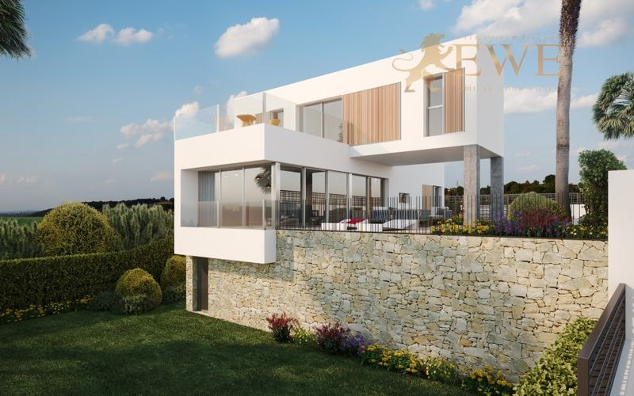
Algorfa
Sophisticated villa overlooking the golf course in La Finca, Algorfa
669.000 €
4 dormitorios · 3 baños · 155.7 m²Ref. EWE1771
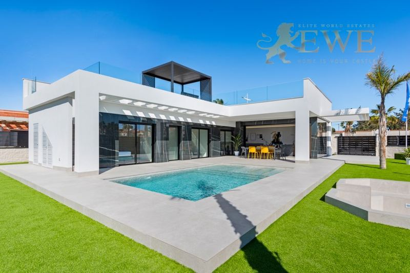
Algorfa
Modern villa in La Finca Golf, Algorfa
670.000 €
3 dormitorios · 2 baños · 100 m²Ref. EWE2255
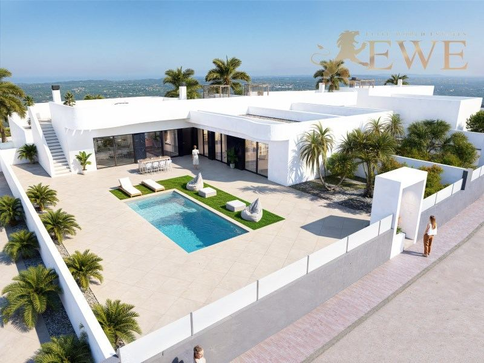
Algorfa
Modern Villa with Private Pool and Large Plot Near La Finca Golf Resort, Algorfa
675.000 €
3 dormitorios · 3 baños · 240 m²Ref. EWE3754
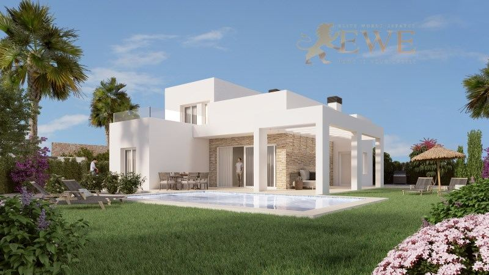
Algorfa
Luxury villa in La Finca Golf Golf Algorfa
779.000 €
3 dormitorios · 3 baños · 133 m²Ref. EWE2030
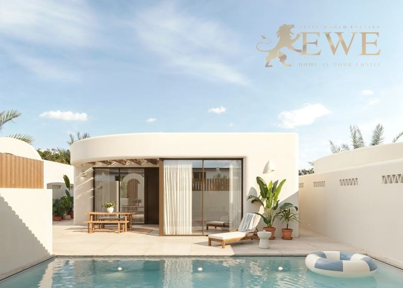
Algorfa
Mediterranean villa with a swimming pool in a picturesque area in Algorfa
795.000 €
3 dormitorios · 3 baños · 150 m²Ref. EWE3604
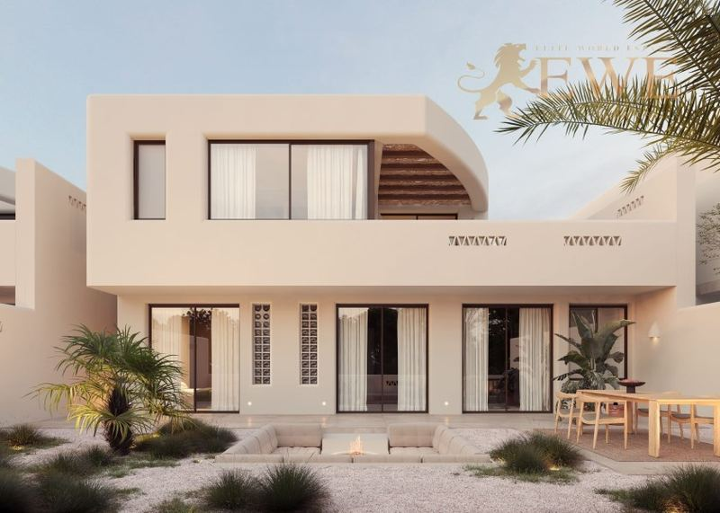
Algorfa
Modern villa with swimming pool for sale in Algorfa.
840.000 €
4 dormitorios · 4 baños · 345 m²Ref. EWE3660
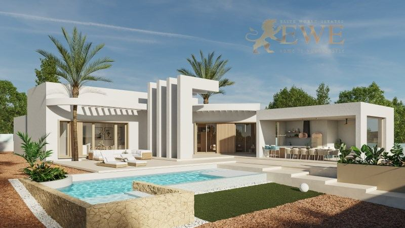
Algorfa
Elegant villa with swimming pool La Finca Golf, Algorfa
995.000 €
4 dormitorios · 4 baños · 200 m²Ref. EWE3606
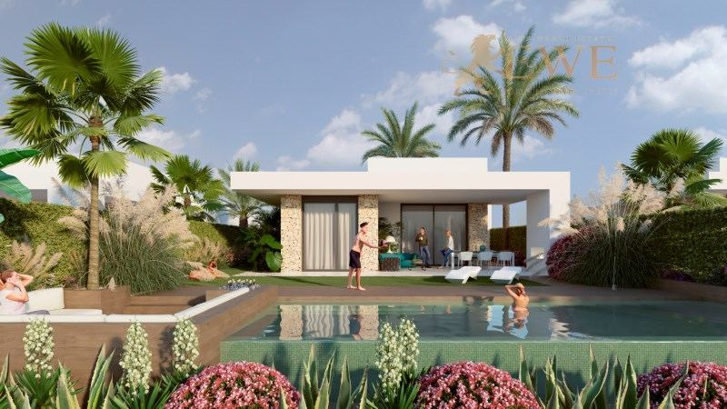
Algorfa
Frontline Villa at the Prestigious La Finca Golf Resort
1.600.000 €
3 dormitorios · 2 baños · 139 m²Ref. EWE3740
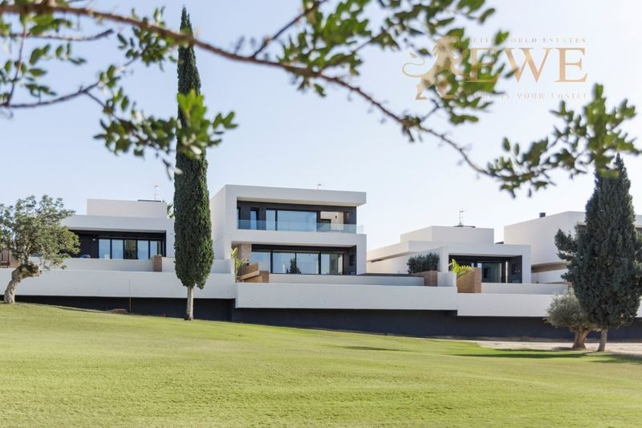
Algorfa
Exclusive Villa at the Prestigious La Finca Golf Resort
1.800.000 €
3 dormitorios · 3 baños · 139 m²Ref. EWE3741
La ciudad
Vivir en Ciudad Quesada
Ciudad Quesada es una gran zona residencial del municipio de Rojales, en el sur de la Costa Blanca, a unos 10 km del mar. Fue uno de los primeros lugares de la costa construidos para compradores internacionales, y hoy tiene una gran comunidad que vive aquí todo el año.
La zona tiene sus propias tiendas, restaurantes y el campo de golf La Marquesa, y el casco antiguo de Rojales, con su puente y sus cuevas, está a pocos minutos. Las playas de arena de Guardamar y La Mata están a unos 15 minutos en coche.
Los precios son más bajos que en la costa, así que se consigue una villa con piscina y jardín por el precio de un piso junto al mar. El aeropuerto de Alicante-Elche está a unos 35 minutos en coche, y Torrevieja a unos 15 minutos.
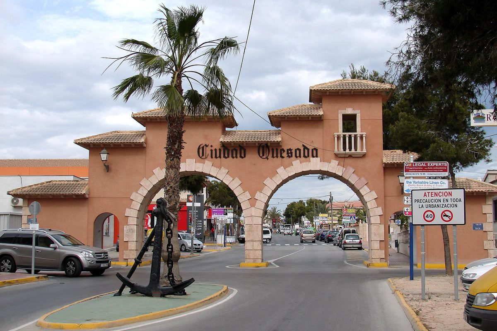
Dónde comprar
Las principales zonas alrededor de Ciudad Quesada
Ciudad Quesada
La zona residencial principal, con tiendas, restaurantes y servicios. Villas, bungalows y pisos en calles tranquilas.
La Marquesa Golf
El campo de golf en el centro de Ciudad Quesada. Villas con vistas al golf y piscina privada.
Doña Pepa
La parte más nueva de Ciudad Quesada, con villas y pisos modernos y una zona comercial cerca.
Rojales
El casco antiguo junto al río Segura, con su puente histórico, cuevas y vida local. Bungalows y villas cerca.
La Finca Golf, Algorfa
Un resort de golf a unos 10 minutos, con hotel y campo. Villas, pareados y bungalows.
Pueblo de Algorfa
Un pequeño pueblo español cerca de La Finca, con comercios y bares y villas en las afueras.
Presupuesto
Cuánto cuesta comprar en Ciudad Quesada
Al precio se suman impuestos y gastos. Para una vivienda nueva de 549.000 €, por ejemplo, son 54.900 € de IVA y 7.686 € de AJD, más notaría, registro y abogado. En la segunda mano los impuestos son otros, así que pídanos siempre la cifra exacta de la vivienda que le guste.
| Obra nueva | 10 % IVA + 1,4 % AJD |
|---|---|
| Segunda mano | 9 % ITP, 11 % por encima de 1 millón de € |
| Notaría, registro, abogado | aprox. 1,5–2,5 % del precio |
| Cada año | IBI y gastos de comunidad, según la vivienda |
Preguntas
Comprar vivienda en Ciudad Quesada: preguntas y respuestas
¿Cuánto cuesta una villa en Ciudad Quesada?
Nuestras villas en Ciudad Quesada cuestan hoy de unos 394.000 € a 1,2 millones de €, la mayoría de 3 o 4 dormitorios con piscina privada. Los pisos y bungalows empiezan en 260.900 €. En La Finca Golf, en Algorfa, las villas cuestan de unos 450.000 € a 1,8 millones de €.
¿Se puede vivir todo el año en Ciudad Quesada?
Sí. Ciudad Quesada tiene una gran comunidad internacional que vive aquí todo el año, con tiendas, restaurantes, centros de salud y golf cerca, y la costa a unos 15 minutos.
¿A qué distancia está Ciudad Quesada del aeropuerto?
El aeropuerto de Alicante-Elche está a unos 35 minutos en coche, y el de la Región de Murcia a unos 45 minutos.
¿Qué gastos hay además del precio?
En la Comunitat Valenciana se paga un 10 % de IVA y un 1,4 % de AJD en obra nueva, y un 9 % de ITP (11 % por encima de 1 millón de €) en segunda mano. Notaría, registro y abogado suman alrededor de un 1,5–2,5 %.
¿Pueden comprar vivienda los extranjeros en Ciudad Quesada?
Sí. Cualquier persona puede comprar una vivienda en España. Necesita un NIE y normalmente una cuenta bancaria española, y le ayudamos con las dos cosas. Consulte nuestra guía del NIE.


¿Busca casa en Ciudad Quesada?
Cuéntenos su presupuesto y lo que necesita. Respondemos en un día laborable, en español, inglés, alemán o polaco.